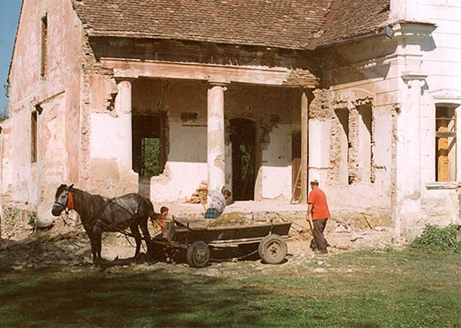
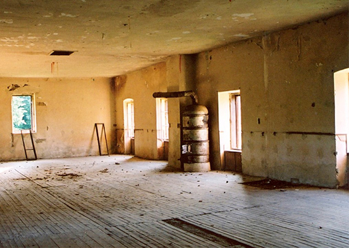
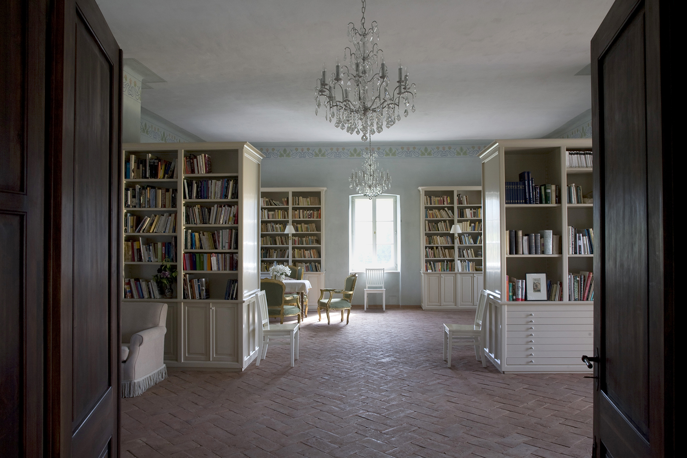
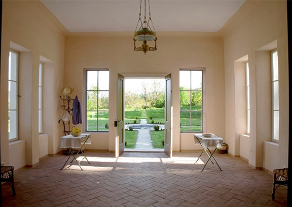

The Apafi Manor
The Manor was built by the Hungarian princely family, Apafi, probably in the 15th century. It is most unusual to have a manor house in a Saxon village - Mãlâncrav and only two or three other villages were governed by Hungarians. Archaeology reveals that the Manor House was built in several phases. There was first a house on the site in the 15th century. The present house was built, in its original form, by (possibly before) the 17th century. It appears to have been rebuilt in the 18th-19th centuries.
Fifteen inventories have come to light in Budapest. They include all the alterations made in and around the house during a period of exactly a century: the earliest was made in 1679, the last in 1778. They show the structure, decoration, furniture and state of the buildings - the Manor House, the 'Curia Nobilitaris' itself, and also the outbuildings, the gardens and the farm establishments, and give a detailed list of tools, items of furniture and crops kept in them.
All the inventories were found in the Hungarian State Archives, twelve of them from the Transylvanian Governmental Archives, and three from the Bethlen Family Archives. This detailed record is very unusual, perhaps unique. Budapest historians confirm that such records simply do not exist for other contemporary 17th-18th Transylvanian or Hungarian manor houses.
The record exists because of the importance of the former owner, Michael Apafi, prince of Transylvania, and his successors and close relatives, the noble Hungarian Bethlen family.
Much of the information is taken up with descriptions of locks, doors, furniture, paintings on the interior walls etc. However, there is a lack of useful detail about the location, size and shape of the buildings. No picture or plans of Almakerek have been found from this period, or from the 19th century. The Trust therefore commissioned archaeological research on the site, which revealed that the existing building, as well as being longer towards the west, was surrounded by a complex of outbuildings: stables, vinegar houses, kitchens, guard and prison huts, and a small tower.
In the late 18th century, the Apafi family died out, and the property passed to the Bethlen family. In the 19th century the house was bought by a Hungarian commoner. Around this time the beautiful Apafi family mausoleum was removed from the church or graveyard to its present site, the National Museum in Budapest, where it is on permanent exhibition.
The deeds of the house record that in the 1920s it was sold by its last private owner to the Evangelical village community. The house was illegally confiscated and misused by the communists from 1947-1989.
In late 2000, the Trust helped the Evangelical community to establish its legal title over the house. In December 2000 the totally derelict and dilapidated building was sold to the Trust by the Evangelical community, since they had no plans for it's future use nor funds to save and restore it.
The Restoration of the Apafi Manor

Under the architect Jan Hülsemann and masterbuilders Fritz Klutsch and Ernst Linzing, the Manor House restoration began. As much as possible, the aim was to restore it to its original 18th century plan


The library before and after restoration
During the summer of 2004, the extension which had existed a hundred years ago was added and the pillars replaced. These were made from hand baked bricks supplied by a Hungarian kiln near Brasov. The roof was completed by the end of October, the handmade tiles also supplied by the Hungarian-managed kiln.
Work on the Manor progressed well in 2005. Windows, doors, electricity and heating were installed, and reinstatement of the curved stone steps to the main entrance was virtually completed. The original plasterwork of the Manor was of a very high standard and thanks to Phil Gaches, who trained our builders in situ, the quality has been replicated. He also taught them how to make and use a running mould and how to restore the ionic columns along the front balcony. Work inside advanced, with interior plastering and floors completed.
As 2006 came to an end, the restoration was in its finishing stages. The British designer David Mlinaric had visited the site twice in September generously advising the Trust on the interior design, while local craftsmen (weaving, embroidery, ironwork, masonry and furniture) had been brought in to complete the fitting of interior and exterior furnishings.

Earlier in the year, the landscape designer Catherine Fitzgerald had produced a detailed plan for the gardens, and assisted by Kirsty Stevens, work started in the autumn on laying the foundations. During the course of the digging, the original central pond was uncovered, intriguingly, in almost exactly the same position as Catherine Fitzgerald's design.
By 2007 the project had reached its final stages
Appeals for donations for books for the Manor library were met with an outstanding response. Among the many generous donations, the Trust was particularly indebted to Ilinca Bossy, daughter of the late Raoul Bossy, for her bequest of books and pictures, many from her father's private collection.
On October 1st 2007, the restored Apafi Manor was consecrated at a service in Malancrav Lutheran church, officiated by Lutheran, Romanian Orthodox and Hungarian Catholic priests. After prayers and hymns Caroline Fernolend, Romanian director of the Mihai Eminescu Trust, spoke to the 200 strong congregation telling of the role that the villagers had played in the reconstruction.